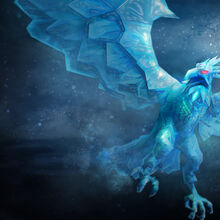
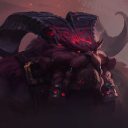
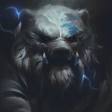
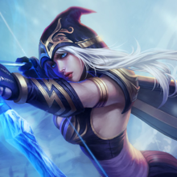

El Freljord
Un reino en el norte de Valorant forjado por una Diosa y sus hermanas, fue dividido por las reencarnaciones de las mismas. Despues de la desaparicion de Las 3 Hermanas, los 3 hermanos semidioses quedaron encargados de cuidar de la humanidad, pero entonces la humanidad dejo de creer en ellos, por culpa de las reencarnaciones de Las 3 Hermanas, quienens tambien tuvieron la culpa de que el reino se dividiese en 3 facciones, la tribu de Avarosa, La Garra Invernal y La Guardia de Hielo.
Algunos campeones importantes de Freljord son:
|  |  |  |  |
|---|